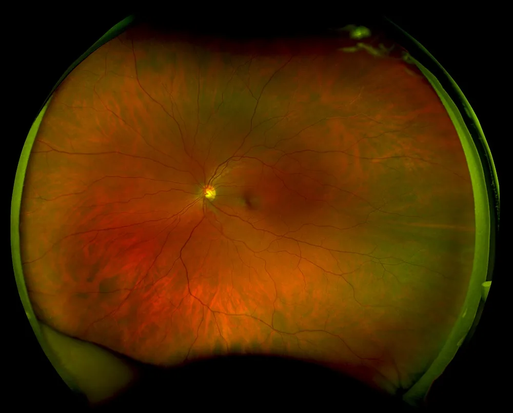
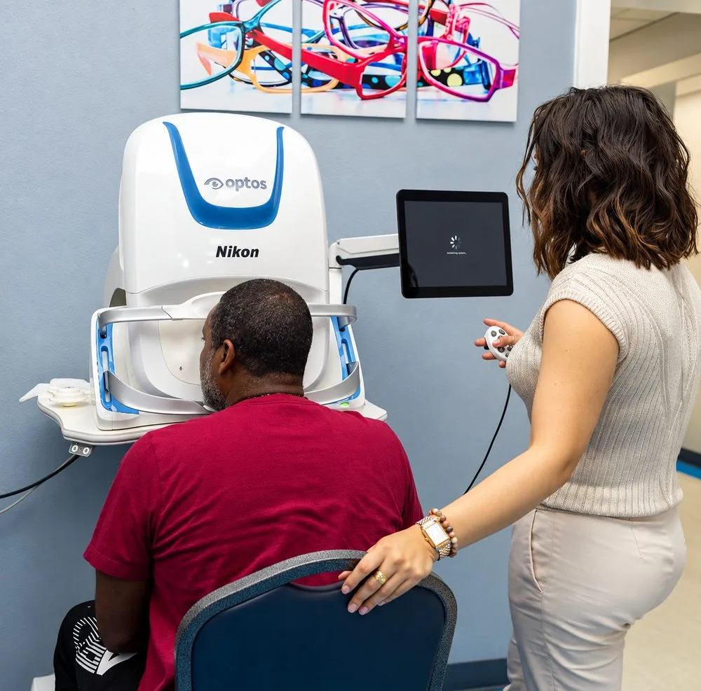

Una vista mucho más amplia que una foto común de la retina
La retina, la capa delgada al fondo del ojo, es donde muchas enfermedades de los ojos aparecen primero. Una foto común de la retina muestra solo el centro. Optos, la compañía que fabrica Optomap, indica que cada imagen Optomap capta cerca del 82% de la retina, unos 200 grados, comparado con aproximadamente el 15% de una foto común.
- Muestra el centro y los bordes de la retina en una sola imagen
- La doctora revisa la imagen con usted en pantalla
- Se guarda en su expediente para comparar año tras año

Muchas veces una alternativa a las gotas para dilatar
Las gotas para dilatar agrandan las pupilas para que la doctora pueda ver dentro del ojo, pero pueden dejarle la vista borrosa y sensible a la luz por horas. Como Optomap le da a la Dra. Hidalgo una vista tan amplia de la retina, muchos pacientes pueden evitar las gotas y seguir con su día.
- Sin horas de vista borrosa y sensible a la luz después de su visita
- Maneje de regreso a casa y vuelva al trabajo o a la escuela
- Una vista amplia de su retina en menos de un segundo
Importante: si todavía necesita las gotas para dilatar lo decide la Dra. Hidalgo, según los resultados de su examen. Algunos pacientes y algunas condiciones de los ojos todavía requieren un examen con dilatación, aun con Optomap.

Lo que Optomap ayuda a la doctora a buscar
Muchas de estas condiciones no causan síntomas al principio. Detectarlas a tiempo le da más opciones.
Enfermedad diabética del ojo
Cambios en los pequeños vasos sanguíneos de la retina, que pueden aparecer antes de que cambie su visión.
Glaucoma
Señales de daño en el nervio óptico, que conecta el ojo con el cerebro.
Degeneración macular
Cambios en la mácula, el centro de la retina que usa para leer y ver caras.
Desgarros y desprendimientos de retina
Problemas cerca de los bordes de la retina, una zona que una vista común puede pasar por alto.
La retina también puede mostrar señales de otras condiciones de salud, como la presión alta. Optomap es parte de su examen de la vista, no lo reemplaza.
Rápido, fácil y sin dolor
- Mire dentro del equipo
Se sienta frente al Optomap y mira dentro, un ojo a la vez.
- Un destello rápido
Cada imagen toma menos de un segundo. No duele y nada toca su ojo.
- La revisan juntos
La Dra. Hidalgo revisa sus imágenes con usted en pantalla y las guarda en su expediente para la próxima vez.
Agréguelo a su examen por $35
En nuestra oficina el seguro no cubre Optomap, así que siempre cuesta $35 de su bolsillo, sin importar su plan.
Preguntas comunes
¿Optomap duele?
No. Es un destello rápido de luz y nada toca su ojo.
¿Todavía necesitaré gotas para dilatar?
Tal vez no. Optomap muchas veces es una alternativa a la dilatación, pero la Dra. Hidalgo lo decide según los resultados de su examen, y algunos pacientes todavía necesitan un examen con dilatación.
¿El seguro cubre Optomap?
No. En nuestra oficina, Optomap siempre es un servicio adicional de $35 que se paga de su bolsillo, con o sin seguro.
¿Cada cuánto debo hacerme Optomap?
Muchos pacientes lo añaden a cada examen anual, para que la Dra. Hidalgo pueda comparar sus imágenes con el tiempo y detectar cambios a tiempo.
¿Puedo ver mis imágenes?
Sí. La Dra. Hidalgo las revisa con usted en pantalla durante su visita.